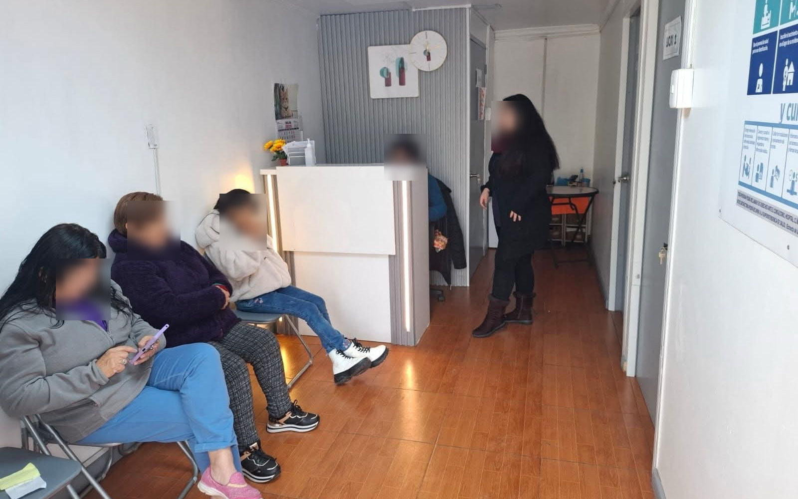

Médico a domicilio
Atención médica en la comodidad de tu hogar.
Mi Bienestar — Consultorios de Chile
Cuidamos de ti, estés donde estés
Atención integral para ti y tu familia en San Ramón, con consulta presencial y a domicilio.
Respondemos por WhatsApp en minutos
Atención a domicilio en San Ramón y comunas cercanas
Equipo de profesionales acreditados y con experiencia
Atención pensada para toda la familia, sin importar la edad
Respuesta y agendamiento por WhatsApp el mismo día

Un centro médico real, en funcionamiento, listo para atenderte con calidez y profesionalismo.
Recibe atención profesional sin salir de casa, con la misma calidez y calidad de siempre.
Atención médica en la comodidad de tu hogar.
Curaciones, inyecciones y cuidados de enfermería donde estés.
Toma de muestras sin salir de tu casa.
Acompañamiento y cuidado especializado para personas mayores.
Atención clínica presencial y exámenes realizados por profesionales de la salud.
Diagnóstico y tratamiento oportuno para toda la familia.
Acompañamiento emocional profesional en un espacio de confianza.
Planes alimentarios personalizados según tus objetivos de salud.
Control ginecológico y acompañamiento en todas las etapas.
Evaluación y terapia del habla, voz y deglución.
Cuidado profesional de pies para tu bienestar diario.
Seguimiento preventivo del desarrollo y crecimiento infantil.
Rehabilitación física y tratamiento de dolores musculares.
Seguimiento profesional para alcanzar tu peso saludable.
Manejo de heridas con técnicas seguras y actualizadas.
Cuidado médico especializado para los más pequeños de la casa.
Seguimiento periódico para mantener tu presión bajo control.
Acompañamiento continuo para el manejo de tu diabetes.
Control y seguimiento de patologías crónicas a largo plazo.
Toma de muestras con resultados confiables y oportunos.
Evaluación cardíaca rápida realizada por profesionales calificados.
Monitoreo continuo de tu presión arterial durante 24 horas.
Cuidamos de ti, estés donde estés: un equipo humano, cercano y profesional, comprometido con la confianza, la calidez y la calidad de cada atención.
Médico Cirujano
Horario de atención: por confirmar
Agendar con Dr. DeivisPsicóloga infanto-juvenil
Sábados de 09:00 a 14:00 hrs
Agendar con FranciscaNutricionista
Jueves y viernes de 10:00 a 17:00 hrs, sábados de 10:00 a 14:00 hrs
Agendar con MartaRevisa nuestras especialidades y define la atención que necesitas.
Cuéntanos qué necesitas y coordinamos contigo el detalle de tu hora.
Recibes la confirmación con fecha, hora y modalidad de atención.
Resolvemos las dudas más comunes sobre nuestra atención.
Estamos verificando y actualizando el detalle de convenios vigentes con Fonasa e Isapres. Escríbenos por WhatsApp y te confirmamos tu caso puntual.
El valor varía según la especialidad y el tipo de atención (presencial o a domicilio). Contáctanos por WhatsApp y te entregamos el valor exacto antes de agendar.
Cubrimos San Ramón y comunas cercanas. Cuéntanos tu dirección por WhatsApp y te confirmamos si contamos con cobertura en tu zona.
Depende del tipo de examen. Para algunos basta con agendar directamente, y para otros se requiere una orden médica previa. Consúltanos por WhatsApp con el examen que necesitas.
Sí, contamos con atención pediátrica y control sano para el seguimiento del desarrollo y crecimiento de niñas y niños.
Los plazos dependen del tipo de examen solicitado. Al momento de tomar la muestra te indicamos el tiempo estimado de entrega de tus resultados.
Como parte de Mi Bienestar — Consultorios de Chile, acompañamos a las familias también en los momentos más sensibles, con respeto, calma y disposición humana.
Acompañamiento integral para aliviar el dolor y sufrimiento.
Apoyo humano y profesional en momentos difíciles.
Trámite realizado con respeto y diligencia profesional.
Dirección: Pedro Aguirre Cerda 9299, San Ramón, Región Metropolitana, Chile
Dr. Deivis Marroquín (Medicina General): horario por confirmar
Francisca Meneses (Psicología infanto-juvenil): sábados de 09:00 a 14:00 hrs
Marta Canales (Nutrición): jueves y viernes de 10:00 a 17:00 hrs, sábados de 10:00 a 14:00 hrs
Escríbenos por WhatsApp y te responderemos a la brevedad.